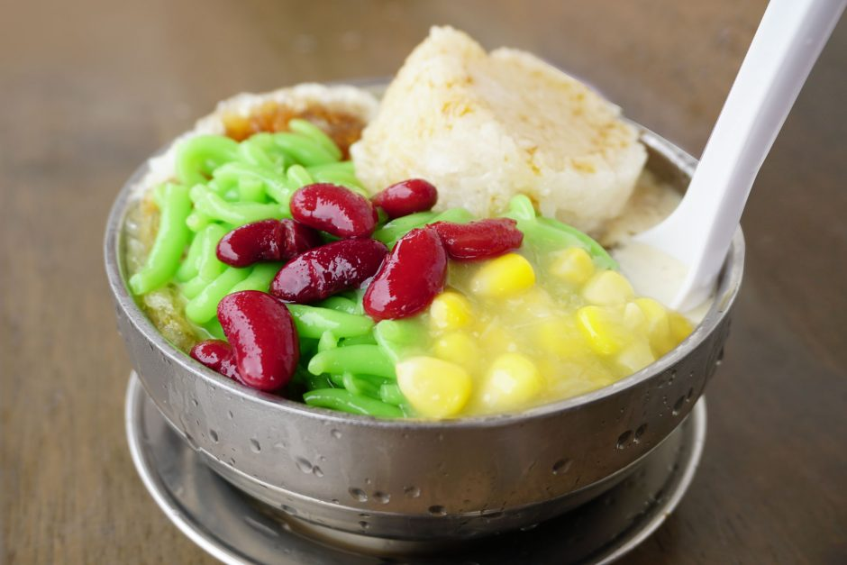
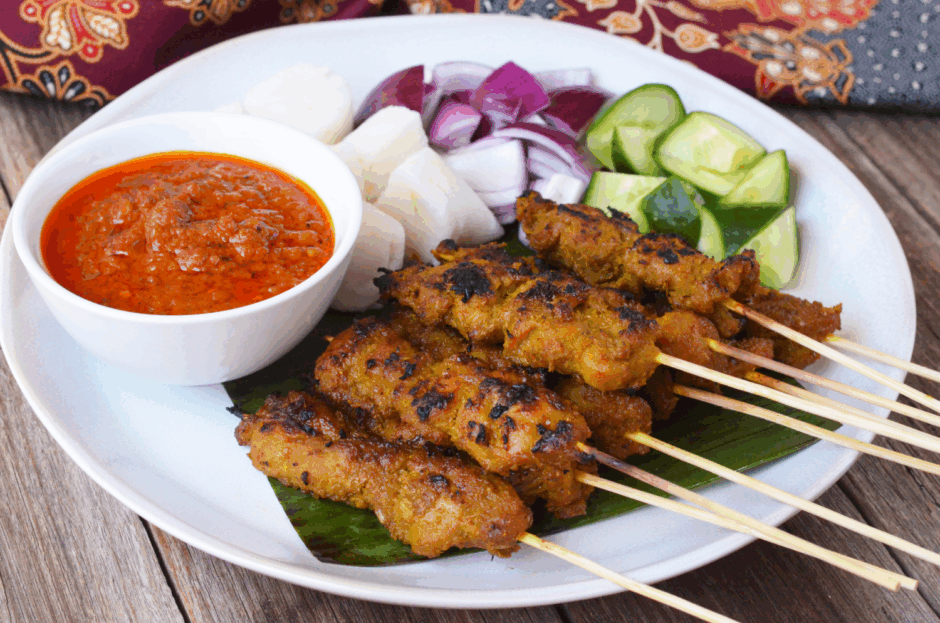
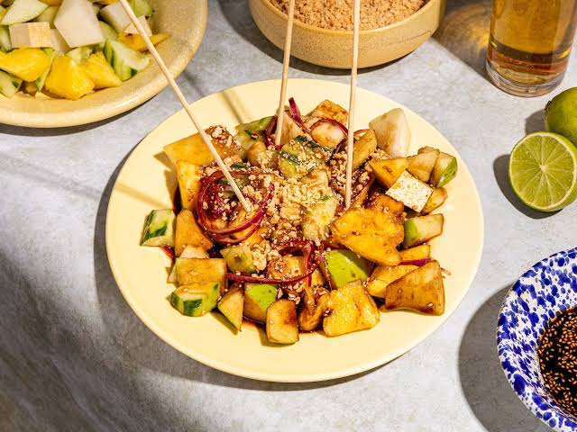

Char Kway Teow
Smoky stir-fried flat noodles with prawns, egg, and bean sprouts — a Penang street food legend.
View More
Curry Laksa
Creamy coconut curry noodle soup packed with prawns, tofu puff, and bold spices — pure comfort in a bowl.
View More
Nasi Kerabu
Stunning blue rice served with fresh herbs, crispy fish, and coconut — a colorful pride of Kelantan.
View More
Beef Rendang
Slow-cooked beef in rich coconut and spice paste — a deep, complex flavor that gets better with every bite.
View More
Cendol
Shaved ice, green pandan jelly, red beans and coconut milk drizzled with palm sugar — a classic Malaysian sweet treat.
View More
Satay
Juicy marinated meat skewers grilled over charcoal, served with rich peanut sauce — Malaysia's favourite street food.
View More
Rojak
A bold mix of fruits and vegetables tossed in a thick prawn paste dressing, topped with crushed peanuts — uniquely Malaysian.
View More
Nasi Ayam
Tender poached chicken served over fragrant rice with chili sauce and clear soup — simple, comforting and absolutely delicious.
View More